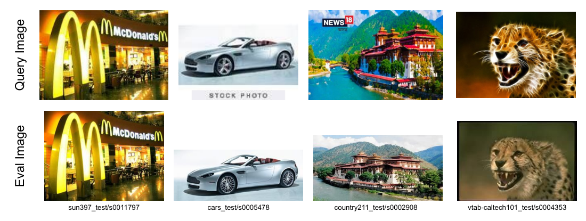
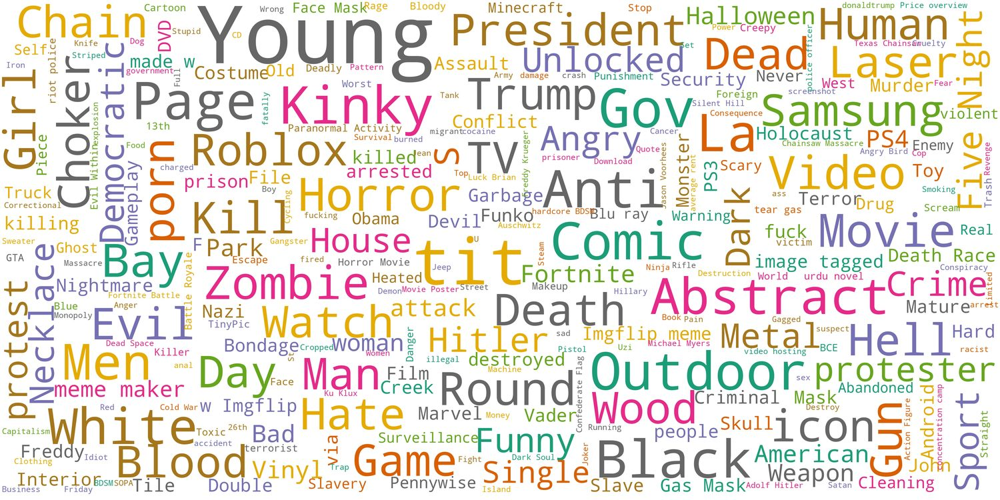

第 34 章 多模态数据工程
💡 本章导读
如果说第 15–17 章告诉你"怎么训练多模态模型"，本章回答"喂什么、喂多少、怎么喂"——多模态模型的能力上限与数据工程的相关性远大于与架构的相关性（回顾第 27 章 DALL-E 3 的教训）。本章按"数据金字塔"自底向上展开：亿级图文对（预训练）→百万级指令（SFT）→十万级偏好（对齐），每一层都有独立的采集、清洗、合成方法论。这是全书的"核心大章"之一：读完后你应当能独立设计一条从零到 SFT 的数据管线，并知道每个环节的"翻车点"。
1.数据金字塔：预训练→SFT→偏好三层供给
多模态模型的数据供给是标准的三层金字塔：底层：预训练图文对（10⁹–10¹⁰ 对）——任务是"模态对齐"（让模型学会"猫"的图像与"猫"这个词是同一件事），数据可以脏、可以短（alt-text 即可）、来源是网络抓取；中层：SFT 指令数据（10⁶–10⁷ 条）——任务是"学会按指令行事"（问答、描述、推理、定位），数据必须干净、多样、格式规范，来源是人工标注+模型合成；顶层：偏好数据（10⁵ 级）——任务是"对齐人类口味"（ helpful/honest/harmless），来源是人工对比标注或 AI 判卷。三层的关系不是"量的递减"而是"质的跃迁"：底层数据决定"知道什么"（知识），中层决定"怎么表达"（能力），顶层决定"表达得多好"（品格）。工程上最常见的错误是层级错配——用脏的预训练数据做 SFT（模型学会说胡话），或用贵的 SFT 数据做预训练（钱花在刀背上）。
三个真实翻车案例（数据层级错配的活教材）：案例一，某团队用网页抓取的"图文对"直接做 SFT（省标注费），模型上线后满口"alt-text 腔"（"点击查看大图"都学进来了）——底层噪声数据污染中层任务；案例二，某团队预训练用 100% 中文图文对，SFT 后英文能力消失——底层语言覆盖缺失，中层无法补偿；案例三，某团队偏好数据用"长度=好"的判卷器（模型偏好长答案），模型学会啰嗦——顶层信号错了，越对齐越歪。三个案例的共同点：失败都发生在"层与层的接口"上，而非某一层内部——数据工程的最难处不是各层的执行，是层间的"交接班纪律"。
三层之间还有不可见的依赖关系：底层的实体覆盖决定中层的"可问范围"（预训练没见过的实体，SFT 问答必出幻觉）；中层的任务分布决定顶层的"偏好维度"（先会做，才有资格谈做得好不好——偏好数据无法教会模型"没学过的技能"）。这个依赖链解释了"能力台阶"现象：模型从"答不出"到"答得对"靠中层，从"答得对"到"答得好"靠顶层，而"能不能答"永远由底层决定。排查能力问题时，先定位它卡在哪一层，再决定"补数据"还是"调训练"——很多"模型不行"的困境其实是"数据哪层缺了"。
📐 理论：数据量级的"亿-百万-十万"定律从何而来
三层量级差异（10⁹ : 10⁶ : 10⁵）不是拍脑袋，而是由各层的学习目标决定的：预训练学的是分布——图文对齐是 10⁴ 维联合分布的估计，样本复杂度要求高（亿万级才能覆盖开放世界的长尾）；SFT 学的是条件映射——"给定图像+指令→回答"是监督学习，百万级样本足以覆盖指令模式（指令的多样性远低于图像内容）；偏好学的是序关系——两两比较只需"方向正确"的信号，样本效率最高。规律：学习目标越"结构化"，所需数据越少。这也是"预训练贵、对齐便宜"的数学根源——以及为什么"重标注"（提升底层数据的信息密度）比"扩量"性价比更高的信息论基础：同样的样本预算，花在提升单样本互信息上收益更大（第 27 章 DALL-E 3 的定量验证）。
| 层 | 典型失败模式 | 体检指标 | 修复手段 |
|---|---|---|---|
| 预训练层 | 长尾实体缺失、caption 同质化、噪声对过多 | 实体覆盖曲线、caption 熵、CLIP 分数分布 | 扩池定向抓取、重标注、分布对齐过滤 |
| SFT 层 | 视觉旁路、模板过拟合、幻觉传染 | 图像依赖率、模板熵、抽检幻觉率 | 盲答闸、模板去重、验证闭环 |
| 偏好层 | 维度混杂、判卷器迎合、分布偏斜 | 单变量占比、判卷器-人评一致率 | 单维度标注、判卷器定期校准 |
使用这张表的方式：训练 run 结束后若某个能力异常（如计数全错），按"层→失败模式→体检指标"逐层排查——十有八九在"体检指标"列就能找到异常项，修复手段在最后一列现成。把"能力异常"翻译成"数据诊断"是数据工程师的核心手艺，这张表是翻译词典。
示例走查：模型"小字读不出"（OCR 弱）→ 定位到预训练层 → 体检指标发现"文档/OCR 数据占比 4%"（低于 10% 下限）→ 修复：定向扩充 Docmatix 类数据至 12% 并提高分辨率课程权重——一次 30 分钟的诊断替代一轮盲目的"加大训练量"。
同样的诊断逻辑适用于任何能力维度：先查数据占比，再查质量分布，最后才怀疑模型架构——这就是“数据中心主义”的排障顺序。
2.大规模图文对：LAION、DataComp 与"抓取-清洗"范式
开源预训练数据的主体是"网络抓取-自动清洗"产物：LAION-400M/5B（arXiv:2210.08402，2021/2022）——从 Common Crawl 网页转储中抽取图片-alt-text 对，用 CLIP 过滤（图文相似度阈值），发布 5B 级候选池；COYO-700M（NAVER，类似管线）；DataComp（arXiv:2304.14108，2023）则是方法论转折——它不发布数据集，而是发布"12 亿候选池+比赛规则"：所有队伍用同一候选池，比拼过滤与重标注策略，胜者用 1/10 的数据量训出更强的 CLIP（DataComp-1B：132M 精选对打败 LAION-5B 全量）。DataComp 的启示是范式级的一课："数据多"输给"数据选得好"——候选池越大，过滤策略的价值越高。此后的开源预训练（Qwen-VL、InternVL 的图文侧）都是"LAION 式大池+DataComp 式精选"的两段式。中文系数据：Wukong/Zero/悟空中文图文对、M6-Corpus——中文 alt-text 更短更噪，中文数据工程普遍更依赖合成 caption。
从 CC3M 到 DataComp 的十五年数据史（每个里程碑都是一个"思想开关"）：
自己抓 vs 用现成池的决策框架：Common Crawl 转储自抓（WAT/WET 文件解析→URL+alt-text 抽取→下载）的优势是时效与定制（要 2025 年新内容、要特定域名的垂直池），代价是工程重（下载带宽、失败重试、存储千万级图片的分布式文件系统）；用 LAION/DataComp 现成池的优势是快（URL 清单+元数据下载即可），代价是"大家都用"（同质化）与时效旧（多为 2021–2022 网页）。实践中的常见组合：主池用现成 + 20% 预算自抓垂直域补充——通用能力靠公共池（避免重复造轮子），差异化能力靠自抓（这才是你的护城河）。自抓的技术细节坑：Common Crawl 的 alt-text 常是文件名或按钮文字（"IMG_2043""submit"）——文本过滤要多加"alt-text 信息熵下限"一道闸。
CC3M（2016）用 alt-text 证明"网络弱监督可训"——33 万对就能训出可用的检索模型；Conceptual Captions（2018）人工清洗到 300 万——"干净一点，强很多"；CLIP 用的 WIT-400M（2021）——"不清洗、堆量+对比学习"，颠覆"清洗优先"信条；LAION-5B（2022）把 CLIP 式抓取开源化——"人人都有 5B"；DataComp（2023）回归精细——"在 12.8B 池里选 132M"。钟摆轨迹：从"少而净"摆到"多而脏"再摆到"多而可净"——每次摆动都由当时的基础设施决定（存储便宜了才能堆 5B，CLIP 分数器成熟了才能"可净"）。读懂数据史的钟摆，就能预测下一个摆向："多+净+重标注"三合一正是 2025–2026 的现状。数据质量对能力的"传导系数"（一个思想实验+实证）：CLIP 在 LAION-400M 与 DataComp-1B（132M）上的对比——数据量少 67%，但 ImageNet 零样本精度反而高 3–5 个百分点；DALL-E 3 换 caption 后"prompt 遵循"的跃迁（第 27 章）；LLaVA 换 ShareGPT4V 数据后描述能力逼近闭源——三个独立证据链指向同一结论："单位数据的信息密度"对能力的传导是超线性的。工程含义：当训练预算固定时，"50 亿原始对"与"5 亿精选+重标注"的正确选择几乎总是后者。数据工程的 ROI 曲线：在"清洗-重标注-配比"三件事上，每 1 美元的边际收益高于任何架构升级——直到架构成为新的瓶颈为止。


候选池规模经济学：候选池每放大 10 倍，"存储+下载+过滤"成本约乘 8 倍（规模效应），而"最终保留率"从 5B 池的 ~15% 降到 12.8B 池的 ~10%（边际质量递减）——池子越大，"过滤器的精度"越值钱。2025 年的推荐配置：目标 1 亿级训练集 → 10–20 亿级候选池（10–20 倍超采样）→ 分级过滤保留 8–15%。如果你只有单机/小集群：直接用 DataComp-1B 或其社区复刻的精选清单起步（预过滤的池子，免部署清洗集群），把省下的算力投入重标注——重标注对最终能力的边际收益高于自己重建清洗管道。
3.清洗管道：去重、过滤、安全的流水线细节
一条工业级清洗管道的工序与参数（以"从 Common Crawl 到预训练就绪"为例）：①格式过滤——最小分辨率（≥200px）、长宽比范围（1:3–3:1）、损坏文件、GIF/表情包剔除；②文本过滤——语言检测（fastText，置信度阈值）、长度下限（≥2 词）、乱码/特殊字符占比；③去重——三层漏斗：精确哈希（MD5）→ 感知哈希（pHash，同图变体）→ 语义去重（文本 embedding 聚类或 MinHash-LSH，Jaccard 相似度 >0.5 视为重复）；④CLIP-score 过滤——图文相似度阈值（DataComp 用分布对齐策略：按目标分布校准阈值而非拍脑袋定 0.25）；⑤NSFW/CSAM 过滤——专用分类器+已知非法内容哈希库（CSAM 是法律强制项，第 7 节）；⑥水印检测——素材网站水印（getty/shutterstock）识别剔除，避免版权雷区；⑦ caption 质量分层——alt-text 长度/信息量打分，分桶存储供后续按"课程"取样。全管道的处理成本：10 亿图片在 200 核 CPU 集群约 2–4 天——数据工程的算力开销约为模型训练的 5–10%，但决定了训练的成败。
📄 论文精读：DataComp 的"分布对齐"过滤（arXiv:2304.14108）
赛制：主办方放出 12.8 亿候选池（Common Crawl 2021-2022 抽取），参赛者不能加数据，只能"设计过滤与重标注策略"，用产出的数据训练 CLIP，按 38 个下游基准平均分排名——把"数据质量"变成可竞赛的变量。小赛道（12.8M）到大赛道（12.8B）五个规模档，中大奖队伍共享方法论。冠军策略的三个可复用组件：①分布对齐过滤——不设固定 CLIP 阈值，而是让保留数据的"CLIP 分数分布"匹配下游目标分布（对抗"阈值过高→只剩简单样本→分布偏斜"）；②多模型集成打分——OpenCLIP 多个 checkpoint 的分数取平均/最小，降低单一判卷器的偏置；③文本即查询重写——用 LLM 把网页上下文改写为"查询式短句"再过滤，缓解 alt-text 与图像弱相关的问题。成绩：132M 精选对训练的 CLIP 超过 LAION-2B 全量训练——数据质量的边际收益在"过滤策略"这一环被放大了 15 倍。DataComp 之后，"数据池+过滤比赛"成为数据研究的新组织形式（视频版 DataComp、语音版亦相继出现）。
💻 代码：清洗管道的三个核心组件（可运行骨架）
import imagehash, hashlib
from PIL import Image
from datasketch import MinHash, MinHashLSH # pip install datasketch
# ① 感知哈希去重（同图变体：缩放/压缩/轻微裁剪）
def phash_key(img_path):
with Image.open(img_path) as im:
return str(imagehash.phash(im, hash_size=16))
seen = set()
def dedup_phash(path):
k = phash_key(path)
if k in seen: return False # 丢弃重复
seen.add(k); return True
# ② MinHash-LSH 文本语义去重（caption 级，Jaccard 近似）
lsh = MinHashLSH(threshold=0.5, num_perm=128)
def text_minhash(text):
m = MinHash(num_perm=128)
for w in text.lower().split(): m.update(w.encode('utf8'))
return m
def dedup_text(doc_id, text):
m = text_minhash(text)
if lsh.query(m): return False # 与已有文本近重复
lsh.insert(doc_id, m); return True
# ③ CLIP-score 过滤（阈值按目标分布校准，而非固定值）
import torch, open_clip
model, _, preprocess = open_clip.create_model_and_transforms(
"ViT-L-14", pretrained="openai")
@torch.no_grad()
def clip_score(img, text):
im = model.encode_image(preprocess(img).unsqueeze(0).cuda())
tx = model.encode_text(open_clip.tokenize([text]).cuda())
im, tx = im / im.norm(dim=-1, keepdim=True), tx / tx.norm(dim=-1, keepdim=True)
return (im @ tx.T).item()
# 实践：先在全量上估分画分布，再按"保留分布与目标对齐"定截断点
# （DataComp 的 distribution-matching 策略，比固定阈值提升显著）工程要点：①去重必须在全局做（分片去重会漏跨片重复），用 Spark/Ray 分布式执行；②CLIP 模型选型与下游对齐模型同系（用 SigLIP 过滤的池训 SigLIP 有"自我应验"风险，需混合多模型打分）；③全管道每个环节记录"样本级审计日志"（哪步过滤了谁、原因）——出问题时可回溯、被质疑时可自证（第 7 节合规需要）。
去重的"反常识"结论：去重不是越狠越好——过度去重（语义级 LSH 阈值过高）会删掉"同一实体的合法多视角"（同一景点的不同照片），伤害长尾覆盖。工程共识：像素级（pHash）必做、文本级（MinHash）谨慎调阈、语义级只在"指令数据"上做（SFT 模板句必须去重，预训练图文对的语义重复反而携带"常见实体先验"）。工具链速查：imagehash/pHash（单机百万级）、datasketch（文本 MinHash-LSH，单机千万级）、Spark/Ray（十亿级分布式）、text-dedup 库（LLM 语料去重的成熟实现，可平移）。去重的算力占比：全清洗管道约 40% 的 CPU 时耗在去重——它是管道中最贵的一道闸，也是"重复数据浪费训练算力"的对冲投资（经验上 2–4 倍回本）。
自建 NSFW 分类器的实践要点：开源分类器（NSFW 检测常用 LAION-NSFW classifier / CLIP-based）召回率约 90–95%，对"卡通色情""文字暗示"两类盲区明显——补法是①增加多模型投票（两个异构分类器任一报警即拦）；②对"边界分带"（0.3–0.7 置信度）走 OCR+文本联合判定；③定期用自家数据分布重训（自建 10 万级标注集，标注用众包+抽检）。过滤的"残留率"心态：目标不是 100% 纯净（做不到）而是"残留可解释可披露"——保留过滤日志（每样本的各道分数），被监管或媒体质疑时能拿出"我们做了什么、漏了什么、为什么"的完整链条。
安全过滤的三个层级（防哪类、怎么防）：①法律强制级——CSAM（PhotoDNA 哈希库比对，命中即上报+永久封禁，不可"调阈值"）；②训练健康级——NSFW（分类器+年龄估计双门，训练数据目标不是"全年龄无害"而是"分布可控"，色情灰度按用途配置）；③质量级——暴力/血腥/极端内容按下游产品定（内容审核模型的训练数据反而需要保留负样本）。水印检测的实战细节：素材站水印（getty/stock）用模板匹配+OCR 联检（文字水印如"shutterstock"），覆盖"四角+中心半透明"常见位；漏检的后果不只是版权——水印图会让模型学出"生成半透明文字覆盖"的伪影（SD1.5 时代"getty 手" meme 的根源）。
十个亿级图片的"存储账"（预算规划参考）：原始图片约 150KB/张（网络均图）→10 亿张 ≈ 150TB 对象存储（月成本数千元级）；WebDataset 分片（1000 样本/tar 片）后的训练读取吞吐需求约 200MB/s/训练节点——存储与网络的开销常被低估，规划时按"训练集群吞吐×3"配置缓存层。另一个常被忽略的开销是"重复抓取"：Common Crawl 的 URL 失效率约 30%（图片已被删），下载预算要按"需求数×1.5"准备。
管道编排的工程选型：亿级图片的批处理，2025 年的主流组合是 Ray Data / Spark + 对象存储 + GPU 推理池——CPU 型工序（哈希、过滤、OCR）走 CPU 池，GPU 型工序（CLIP 打分、VLM caption）走弹性 GPU 池，两者通过队列解耦（GPU 池按需伸缩，成本弹性最大）。容错与断点续跑是管道设计的"看不见的 80%"：每道闸的输入输出做"清单文件+内容寻址"（样本 id 可重放），任何一道闸崩溃后从清单续跑而非重头——清洗管道的工程成熟度，就看"半夜三点挂掉后早上的恢复时间"。
4.重标注革命：从 alt-text 到 VLM caption
第 27 章已讲过 DALL-E 3 的重标注革命，本章补充开源谱系与工程细节：第一代 captioner 是 BLIP/BLIP-2（2022）——"短而准"的描述（一句话，实体级），把 LAION 的 alt-text 升级为"更贴图像的短 caption"；第二代是 LLaVA 系合成（2023）——用 GPT-4V/Qwen-VL 对图像生成"对话式多轮描述"（LLaVA-Instruct 665k 的 caption/对话/复杂推理三源），信息密度跃升一个层级；ShareGPT4V（2024）用 GPT4V 批量产出"长而详"的描述（风格、构图、隐含语义），微调后模型描述能力逼近闭源；CapsFusion（2024）则系统研究"alt-text 与合成 caption 怎么混"——结论是两者互补而非替代：alt-text 是"人写的、短、噪声"（分布=真实用户 query），合成 caption 是"模型写的、长、干净"（分布=描述性语言），混合训练让模型同时适配检索 query 风格与长描述风格。重标注的工程配方：①captioner 选型——7B 级 VLM（Qwen2.5-VL）质量/成本最优；②幻觉过滤——caption-图像 CLIPScore 下限+实体核验（caption 提到的实体在图像中可检出）；③长度分桶——短/中/长 3:4:3 混合；④成本——10 亿图×7B VLM（vLLM 批推理）约数千 GPU 时，为预训练成本的 3–5%。重标注已成为开源多模态的"标配数据工序"——不做重标注的预训练，在 2025 年起跑线上已落后一代。
幻觉问题的三层防御（重标注的核心质量控制）：①事前——caption 指令模板明确"只描述可见内容，不确定就略过"（提示词层面的幻觉抑制，约减 30–40%）；②事中——低温度采样+实体核验（caption 中的每个具名实体应在图像检测/OCR 结果中有对应，否则触发重写）；③事后——CLIPScore 过滤+抽样人审（生成 caption 的图文相似度分布应与原图 alt-text 分布相当，显著右移说明 captioner 在"脑补"）。幻觉税的经济学：三道闸会淘汰 15–25% 的合成 caption——这笔"质量税"必须交，否则幻觉会被预训练放大成模型的"凭空添加"先验（第 27 章遗留问题的数据侧根源）。
captioner 选型的定量参考（2025 年社区基准口径）：BLIP-2（快、短、实体准，适合检索式场景）；LLaVA-1.5 系（中等长度、对话式）；Qwen2.5-VL-7B（长描述质量/成本最优， hallucination 率中等）；GPT-4o（质量天花板、贵 20 倍，适合种子数据与小规模精标）。一个常被忽略的维度：caption 风格的"用途匹配"——给 T2I 重标注要用"描述性风格"（DALL-E 3 式），给 VLM 预训练要用"对话+推理混合"（ShareGPT4V 式），给检索系统要保留"query 风格"（alt-text 原味）——同一张图的不同 caption 是不同训练目标的原材料，没有"最好的 caption"只有"最适合目标的 caption"。
caption 多样性的"温度控制"：合成 caption 时采样温度与提示词变体的设计直接影响下游——温度过低（0.2）则 caption 同质化（"一个房间里有张桌子"万遍），模型学到"模板先验"；温度过高（1.2）则幻觉率上升。实践配方：温度 0.7 + 5–10 个提示词变体（短描述/详细/诗意/技术性/对话式）轮换，每图生成 2–3 版本后按长度分桶入库。另一个被低估的维度：负面样本——刻意保留 1–2% "描述与图像不符"的样本（打上噪声标签或直接丢弃 caption 只留图），对提升模型"对 caption 的批判性使用"有奇效（DPO 前置免疫）。
caption 质量的"可测化"（重标注闭环的仪表盘）：①信息密度——caption 中的具名实体数/句子长度（DALL-E 3 风格的"密集描述"平均 40+ 词、5+ 实体）；②图像依赖度——"无图盲答一致性"：让纯文本 LLM 只看 caption 回答关于 caption 的细节问题，若不看图也能高对（caption 都是常识套话）则信息密度不足；③幻觉率——实体核验（caption 实体 vs 检测器输出）的冲突比例；④风格覆盖——短/中/长与"客观/对话/推理"二维分布图。四个指标构成重标注的"出厂检验单"：批量 caption 上线前先在 1000 张抽样图上出这四张图，任何一张异常都先修管道再放行——重标注的失败往往是"批量放行后发现 caption 全是同质化长句"，检验单的价值就是把这种事故拦在入库前。
5.SFT 指令数据：LLaVA-Instruct 的构造学与升级谱系
LLaVA-150 万指令数据（第 16 章）的构造学值得逐层拆解，因为它是"用强模型造弱模型数据"范式的开山模板：①视觉内容源——COCO（118k 图）+GQA/OCR- VQA/VisualGenome/TextVQA（覆盖自然图/图表/文字/关系问答四类场景）；②对话模板化——3 类对话（详细描述/多轮对话/复杂推理）用 GPT-4 基于人工标注的 ground-truth 短语展开成自然对话（而非让 GPT-4 自由发挥——防止幻觉与格式漂移）；③任务覆盖设计——conversation/detail/reasoning 三类样本的 1:1:1 配比是刻意设计（简单描述、细节追问、推理各占其一）。升级谱系（2023–2026 的四代进化）：一代：LLaVA-Instruct（GPT-4 基于 GT 展开）；二代：ShareGPT4V/ALLaVA（GPT-4V 直接看图生成，摆脱 GT 依赖，但幻觉风险上升）；三代：文本重用式（Cambrian-1 的"从纯文本 SFT 库改写为视觉版"、MAVIS 的数学视觉合成）、四代：自举式（模型自生成+自我过滤：R1 风格的"生成-验证-筛选"闭环，2025 年成为主流——LLM 领域的 self-instruct 思想完全平移）。四代的共同趋势：人工标注退场，"强模型生成+自动验证"接管——验证器的质量（裁判模型、一致性检查、可执行验证）成为新的竞争焦点。
| 来源 | 图像数 | 对话类型 | 承担能力 |
|---|---|---|---|
| COCO（caption 展开） | 11.8 万 | 详细描述/多轮对话 | 描述与对话基本功 |
| VisualGenome | 10.3 万 | 区域问答/关系推理 | 空间关系、属性绑定 |
| VQA v2 | 6.1 万 | 开放问答 | 常识问答 |
| OCR-VQA / TextVQA | 2.9 万 | 文字场景问答 | 场景文字理解 |
| 合成推理（GPT-4 生成） | — | 复杂推理/比较/计数 | 高阶推理 |
拆解的启示：能力覆盖靠"数据源多样性"而非"单源堆量"——五个来源各管一摊，缺哪个哪个能力瘸腿；合成推理数据用"GPT-4 看着 GT 短语展开"而非自由生成（防幻觉）。这张表是 2023–2025 年几乎所有开源 VLM SFT 配方的原型，各家只是替换来源与配比。
| 代际 | 代表 | 构造方式 | 优势 | 风险 |
|---|---|---|---|---|
| 一代（2023） | LLaVA-Instruct | 强模型基于 GT 展开 | 幻觉低、成本低 | 受 GT 覆盖限制 |
| 二代（2023 末） | ShareGPT4V/ALLaVA | 强 VLM 直接看图生成 | 摆脱 GT、描述更细 | 幻觉率上升 |
| 三代（2024） | Cambrian/MAVIS | 文本库改写+程序化合成 | 覆盖数学等垂直能力 | 语言先验旁路风险 |
| 四代（2025） | R1 式自举 | 生成-验证-筛选闭环 | 规模化+质量可控 | 验证器质量决定上限 |
🍳 实战配方：为垂直领域造 1 万条 SFT 指令数据
场景：医疗影像/工业质检/电商商品图等领域微调。1. 种子设计（最被低估的一步）：收集 50–100 条人工撰写的"完美问答"作为风格锚点——覆盖难例（多物体计数、缺陷定位、鉴别诊断），写下"为什么好"的标准。2. 生成：强 VLM（GPT-4o/Qwen-Max）输入=领域图+种子范例+任务清单（QA/描述/比较/定位各若干），要求输出 JSON 结构（问题、答案、能力标签、难度标签）。3. 双重验证：自动验证（规则：答案不含"如图所示"类指代、长度合规；模型验证：另一个 VLM 独立回答同问题，答案一致才保留）；4. 人工抽检：10% 抽检，错误率 >5% 则回炉提示词。5. 配比与去重：按能力标签配比（参考第 16 章 1:1:1 起步）、MinHash 去重。成本：1 万条约 $500–2000（生成+验证）+1–2 人周——垂直领域 SFT 的门槛已经从"数据团队"降到"一个人+一个预算池"。
SFT 数据的六大质量红线（自检清单）：①答案自包含——不含"如图所示""上图"类指代（图文对中图是输入，指代造成歧义）；②图像-文本互信息下限——答案必须依赖图像（纯常识可答的题教会模型"不看图"，是视觉指令数据的第一毒药）；③格式一致性——JSON/对话格式统一，特殊 token 规范（
垂直 SFT 的"数据-效果"经验曲线（多个领域项目的共同观察）：1k 条精标数据让模型"会说行话"（术语正确率跃升）；1 万条覆盖"常见任务形态"（任务成功率过 80%）；10 万条进入"长尾与推理"区间（收益开始陡峭递减）——领域微调的甜蜜点通常在 1–5 万条，超过后应把钱花在偏好数据（对齐领域口味）而非继续堆 SFT。另一个反直觉结论：领域数据的"排版"比"数量"更早触顶——领域术语的书写一致性（缩写全称、大小写习惯）若混乱，模型会学到"随机风格"，10 万条也救不回来；先用 100 条统一"领域文体规范"再扩量。
垂直领域数据的"三源混合"配方（领域 SFT 的通用模板）：①领域种子（1–5%）：专家人工撰写的"完美示范"（风格锚点+难度上限定义）；②强模型扩张（70–80%）：GPT-4o/Qwen-Max 以种子为 few-shot 范例批量生成；③真实流量改造（15–25%）：线上真实问答经脱敏+改写（分布最真实、噪声也最大，需要验证闸）。三源的分工：种子定"什么是好"，扩张定"有多少"，真实流定"像不像真的"——缺种子则质量漂移，缺真实流则"实验室数据综合征"（评测高、上线水土不服）。领域数据的"难度校准"技巧：让生成模型按"新手/熟手/专家"三档作答同一问题，保留专家档（训练信号清晰）+10% 熟手档（保留语言多样性）——全专家数据会让模型的表达过于"教科书化"。
指令多样性的度量（"多样"不能靠感觉）：①模板熵——问题句式的 n-gram 分布熵（低于阈值=模板化过重）；②能力标签覆盖率——预设能力清单（计数/定位/比较/因果/OCR/反事实…30 项）逐项统计样本数，长尾项不足则定向补造；③难度分布检验——用当前模型对全部 SFT 数据做"通过率测试"：通过率 >95% 的样本对训练无信息（太简单），<0.5% 的样本多数是噪声（太难/错标）——"通过率 5–90%"区间才是有效训练带，这个"数据难度体检"应在每轮 SFT 前跑一遍。
6.数据配比、课程与数据飞轮
配比：预训练阶段的多源混合（图文对/OCR/图表/视频/纯文本）是"看不见的手"——Qwen-VL 与 InternVL 的技术报告都透露"纯文本数据必须保留"（防语言能力退化，占比 10–20%）；图表/文档数据需要"过采样"（天然占比太低但任务价值高）。课程（curriculum）：实践共识是"低分辨率→高分辨率"（先学语义再学细节）、"短 caption→长指令"、"通用→领域"三级课程；激进的"高分辨率从头训"在小数据下反而更差。数据飞轮：模型上线→收集真实失败案例→针对失败造数据→微调→上线——这个闭环在多模态产品（客服看图、内容审核）的迭代周期约 2–4 周/轮，飞轮转速是产品竞争的真正护城河（模型差异会被追平，数据闭环不会）。配比实验方法：小模型（1–2B）上做配比网格实验（每格 1–2 天），把结论外推到大模型——Qwen2-VL 报告的"数据配比先用小模型扫"是标准做法，比在大模型上拍脑袋便宜 20 倍。
课程学习的实证细节（各家的训练日志口径）：①分辨率课程——224px（30% 步数）→448px（40%）→672px+原生分辨率（30%），InternVL 系的配置；"低分辨率阶段"的本质是先在高 token 效率下对齐语义，高分辨率阶段只学"细节安装"；②序列课程——短 caption → 对话 → 长文档，与"预训练→SFT"的宏观阶段呼应；③数据质量课程——低质大池先训（学分布），精标小池后训（学品味），DataComp 的两段式训法即此思想的 CLIP 版。课程的反面证据也要知道：在数据同质、目标单一的场景（如 CLIP 类对齐），随机打乱与课程差距不大——课程的价值随"任务异质性"上升，别在 homogeneous 数据上迷信课程。
| 数据类型 | 占比参考 | 作用 | 缺失后果 |
|---|---|---|---|
| 自然图文对（重标注后） | 45–55% | 核心对齐能力 | 通用理解弱 |
| OCR/文档/图表 | 10–15% | 文字与结构理解 | 读图识字差 |
| 纯文本（LLM 语料） | 10–20% | 语言能力保持 | 语言退化、"哑巴多模态" |
| 视频/多图序列 | 10–15% | 时序与多帧推理 | 视频任务崩 |
| 定位/坐标数据 | 5–10% | grounding 能力 | 只能"说"不能"指" |
| 领域增强（医疗/代码/科学） | 3–8% | 长尾专业能力 | 专业题失分 |
配比的"唯一真理"不存在——上表是社区共识的起点而非终点：目标应用决定偏置（做文档产品→文档类加倍；做 agent→定位类加倍）。配比实验的正确姿势：1–2B 小模型网格扫描（每格 1–2 天），用"验证集能力雷达"而非单一 loss 判断——配比的价值在于能力结构，而非总分。
飞轮与配比的联动：飞轮回流数据应计入下一轮的配比表（作为"动态配额"）——初始配比是静态设计，飞轮数据是"在线修正项"；成熟系统的配比表会随飞轮迭代漂移（如文档类从 12% 漂到 20%，因为真实用户 40% 的失败在文档类）——配比表是"活文档"而非"设计定稿"，每次训练 run 前应重新评审配比与最近 4 周的失败归因分布是否匹配。
💻 代码：自举式（R1 风格）SFT 数据生成-验证-筛选闭环
# 自举闭环：强模型生成 N 候选 → 验证器筛选 → 高质样本进 SFT
import json, itertools
from openai import OpenAI
client = OpenAI()
def generate_candidates(image_b64, task_spec, n=8):
prompts = [f"为这张图生成一条{task_spec}的问答对，要求：{extra}"
for extra in task_variants(task_spec, n)]
outs = []
for p in prompts:
r = client.chat.completions.create(
model="qwen-max", messages=[{"role": "user", "content": [
{"type": "image_url", "image_url": {"url": image_b64}},
{"type": "text", "text": p}]}], temperature=0.9)
outs.append(parse_json(r.choices[0].message.content))
return outs
def validate(sample, verifier_model="qwen-vl-max"):
"""验证器三道闸：独立性重答 + 图像依赖检查 + 格式规则"""
q, a = sample["question"], sample["answer"]
# 闸1：盲答一致性——验证器不看原答案独立作答，语义一致才留
blind = verifier_answer(verifier_model, sample["image"], q)
if not semantic_match(blind, a): return False, "answer_mismatch"
# 闸2：图像依赖——不给图时验证器应答错/不确定（否则题不依赖图）
noimg = verifier_answer(verifier_model, None, q)
if answerable_without_image(noimg): return False, "not_visual"
# 闸3：格式与指代规则
if contains_deixis(a): return False, "deixis" # "如图所示"
return True, "ok"
# 主循环：每图生成 8 候选 → 验证 → 通常 2–3 条存活 → 入库
pool = []
for img in images:
for cand in generate_candidates(img, "计数与定位"):
ok, reason = validate(cand)
if ok: pool.append(cand)
json.dump(pool, open("bootstrapped_sft.json", "w"), ensure_ascii=False)
# 经验值：生成:存活 ≈ 8:2.5；成本约为直接人工标注的 1/10，质量更高（验证器把关）自举闭环的两个关键设计：①"盲答一致性"替代"自我评分"（判卷器不知道标准答案，杜绝"裁判迎合"）；②"图像依赖闸"专治视觉旁路（第 5 节红线②的自动化）。验证器比生成器重要——闭环的产出质量上限由验证器决定，这是 2025 年"数据自举"军备竞赛的真正战场。
偏好数据的构造学（顶层 10 万条怎么来）：①来源三元组——人工标注（RLHF 金标准，$2–5/对比）、模型对抗生成（DPO 的 chosen/rejected 对：chosen 来自最优采样，rejected 来自"温度拉高的差采样"或"定向破坏"——幻觉版/格式崩坏版）、真实用户反馈（点赞/点踩，噪声大但分布真）。②维度的"单变量原则"——每条对比只考察一个维度（正确性/完整性/格式/安全性），混合维度的对比会让对齐信号互相打架（模型学成"哪个长选哪个"）。③多模态特有的偏好维度——"答案与图像的一致性"（拒绝幻觉答案）必须单列一个维度，与"语言质量"分开标注——混标的多模态偏好数据是 2024 年多个开源模型"对齐后幻觉率反升"的元凶。偏好数据是三层金字塔中"设计感"最强的一层：它编码的不是知识而是价值观，而价值观需要干净的单一维度来表达。
飞轮的"失败挖掘"方法论：线上失败案例≠全部回流——先做失败归因聚类（用 embedding 把失败案例聚类，找出 Top-10 失败模式，如"计数>5 全错""小字读不出""多物体遮挡漏检"），每模式定向造 500–2000 条数据（自举配方）再增量训练。盲目回流全量失败案例的害处：失败案例天然分布偏斜（集中在热门场景），全量回流会放大热门场景过拟合、冷门场景继续饿着。飞轮的度量：每轮"失败模式覆盖率"（Top-10 模式中被本轮数据覆盖的比例）与"回归率"（已修复模式是否复发）——两个指标画在一起，就是飞轮转速的仪表盘。
💡 技巧：混合公开数据集的"许可证传染"检查
把多个公开数据集混进训练集时，做三步"传染检查"：①逐集登记许可（建一个 dataset-manifest 表：名称、版本、许可、来源链接、用途限制）；②识别传染性条款（CC-BY-SA 要求"派生物同许可"——训练产物是否算派生物在多数法域无定论，商业项目倾向避开）；③混合物的许可下限——混合物的"最严格许可"决定了整池的发布选项（一勺 research-only 会污染整锅）。实践建议：训练池与发布池分离——训练可以宽容（内部使用），发布数据集时只选"许可干净"的子集并附 manifest。三步检查 30 分钟，避免的是法务在最坏时点的全面回溯。
补充一个高频争议点：Hugging Face 上标 apache-2.0 的数据集不等于“里面所有样本可商用”——数据集许可只约束组织形式，样本级版权看原始来源；manifest 表里务必区分“数据集许可”与“样本级许可”两列。
7.法律、许可与合规
LAION 诉讼案（2024，德国摄影师起诉 LAION-5B 含其作品）与 Getty Images v. Stability AI（英美两案）划定了抓取数据的法律风险边界——两案的核心争点都是"抓取+过滤后的数据集是否构成侵权性使用"，判决趋势（截至 2026 初）：单纯"数据集发布"与"训练用途"在不同法域有不同待遇（德法院初审倾向 LAION 的研究豁免，Getty 英国案 Stability 胜诉部分依据 TDM 例外，美国 fair use 仍在拉锯）。工程层面的合规动作：①数据集许可分层管理（CC-BY/CC-BY-SA/仅研究/商用需授权四档，训练用哪档取决于发布计划）；②"版权雷区清单"——素材站水印图、名人肖像、医疗隐私（HIPAA/个保法）优先剔除；③输出侧合规——生成模型的可版权性与责任归属（中国北京互联网法院"AI 文生图第一案"2023 判定用户提示词+参数调整构成独创性，模型方与平台方责任在服务条款中约定）；④训练数据溯源（data provenance）——记录每个样本的来源与许可，应对未来的审计要求（EU AI Act 已要求训练数据摘要披露）。合规不是法务的事，是数据管道的一等公民：管道设计时没留溯源字段，事后补是灾难。
溯源工程的落地清单（数据管道的" passports"）：①样本级元数据——source_url、抓取时间戳、许可标签（自动分类器+域名白名单）、过滤链路记录（每道闸的通过/拒绝与分数）；②血缘关系——重标注样本要记录"源图 id+captioner 版本+指令模板版本"（captioner 升级时可比对增量）；③哈希锚定——样本内容哈希入库，防止"版本漂移后说不清训过什么"；④披露报告—— datasheet/数据卡（Gebru 等的数据声明规范）作为发布物的一部分。这四件事的成本约为管道总成本的 3–5%，但在诉讼、审计、复现三类场景下的价值是"生存级"的——EU AI Act 的披露义务只是把"以后必须做"写进了法条。
数据团队的现代构成（2025 年口径）：数据工程师（管道与算力）+ 数据研究员（配比实验与消融）+ 领域标注团队（种子与抽检）+ 合规（许可与审计）——四角色的配置比例约 3:2:2:1。常见的组织性翻车：把数据当"标注外包问题"（只配标注团队）而不当"研发问题"——DataComp 式的过滤策略创新需要"研究员"，这是数据团队与标注团队的本质区别。
💡 技巧：数据工程的"五问审计清单"
评审一条数据管线（自己的或供应商的）依次问：①候选池多大、过滤策略是什么？（有 DataComp 式的分布对齐，还是拍脑袋阈值）；②重标注做了吗？幻觉闸在哪？（captioner 幻觉税交了没有）；③SFT 数据过六条红线吗？（自包含/图像依赖/格式/难度/幻觉率/去重）；④配比与课程是小模型扫出来的吗？（还是拍脑袋）；⑤溯源字段全吗？许可分层了吗？（诉讼与审计的生存题）。五问全绿，这条管线才能支撑一个训练 run——数据工程的"信任"是用审计建立而非用承诺。
许可决策的速查树（数据集入库前过一遍）：①发布物包含原始数据？→ 只能入库 CC 系/公有领域（LAION 这类"仅发布 URL+元数据"的设计正是为了绕开分发权问题）；②仅发布"训练产物"（模型权重）？→ 多数法域对"模型是否含训练数据版权"尚无定论（Getty 英美案趋势是 fair use/TDM 例外倾向），但需在模型卡中披露数据构成；③商用产品？→ 逐数据集核对许可字段（CC-BY 需署名、CC-BY-SA 需同许可传染、研究-only 不可商用）；④含人脸？→ 欧盟 GDPR + 中国个保法双重约束，模糊化或走"合法公开来源+免责声明"策略并留存决策记录。把这棵树做成数据入库的自动 gate（许可字段缺失即拒绝入库），比"事后补课"便宜两个数量级。
中国法域的三个特有注意点：①《生成式人工智能服务管理暂行办法》（2023）要求训练数据合法性承诺+生成内容标识（与第 30 章 AudioSeal 呼应）；②《数据安全法》/《个人信息保护法》——人脸、车牌等生物特征与个人信息在训练数据中的处理需"单独同意"或匿名化（人脸模糊化是视觉数据管线的标配闸）；③《人工智能生成合成内容标识办法》（2025 施行）——显式标识+隐式水印双重要求，开源模型发布时附带水印能力成为事实要求。跨境团队的最简合规策略：按"最严法域"配置管道（人脸模糊+溯源+标识），一套管道全球通行。
8.本章小结
多模态数据工程的三条主线在 2024–2026 年完成合流：清洗范式（DataComp 证明"选得好胜过多"）、重标注范式（VLM caption 成为标配工序，caption-图像互信息决定条件生成上限）、合成范式（SFT 数据四代进化到"强模型生成+自动验证"闭环）。数据金字塔的三层各有方法论：底层求覆盖（清洗+重标注）、中层求密度（种子+生成+验证）、顶层求品味（对比信号）。合规从"道德选项"变成"工程约束"（溯源、许可分层、输出合规）。本章与第 35 章（预训练实战）是"数据-训练"双子章：下一章把本章的数据投入到三阶段训练的熔炉里，完整走一遍"从 0 训一个迷你 LLaVA"的工程全程。
把本章放回全书坐标系：第 15–17 章的"训练三段论"是发动机，本章的数据工程是燃料与油品——发动机再好，油品不行照样拉缸。与第 27 章（生成数据）、第 30 章（音频数据）、第 31 章（视频数据）、第 33 章（机器人数据）的关系：它们都是本章"金字塔+清洗+重标注+飞轮"四大件在各模态的特化——数据工程的元方法论只有一套，模态只是换了原料。读者在后续模态章节遇到数据问题时，回到本章找对应的"件"即可。
这种"元方法论迁移"的能力，正是本书希望你从"会用某个模型"进化到"能开创新模态管线"的关键一步——数据工程的思维模式比任何具体配方都更长寿。
本章知识的"实践顺序"（如果你要从零搭管线）：第 1 周先跑通"现成池+重标注"最小闭环（DataComp-1B 子集 100 万 + Qwen2.5-VL 重标注 + 基础过滤）；第 2 周接入自举 SFT 生成-验证闭环（本章代码）；第 3 周做配比小模型实验 + 失败挖掘飞轮；第 4 周补溯源与合规字段。一个月的建设顺序，本质是"先让数据流动，再让数据变好，最后让数据可信"——与模型训练"先跑通、再调优、再对齐"的节奏完全同构。
如果只能记住本章一件事：记住"数据质量的边际收益高于架构升级"这条 ROI 判断——它决定了资源紧张时，你的下一笔钱应该花在 GPU 上还是数据管道上。
历史上每一次“数据觉醒”（ImageNet 之于 CNN、LAION 之于 CLIP、重标注之于 DALL-E 3）都验证了同一件事：数据的质变先于模型的质变。
| 数据集 | 规模 | 许可 | 典型用途 |
|---|---|---|---|
| LAION-5B / 2B-en | 50 亿/22 亿对 | CC-BY 4.0（数据分布） | CLIP 类对齐预训练候选池 |
| DataComp-1B | 1.32 亿精选 | 比赛产出（开放） | 高质量 CLIP 训练 |
| COYO-700M | 7.5 亿对 | CC-BY 4.0 | 对齐预训练 |
| Wukong（悟空） | 1 亿中文对 | 研究为主 | 中文对齐 |
| LLaVA-Instruct-665k/1M | 66 万/158 万 | CC-BY 4.0 等 | 视觉指令 SFT |
| ShareGPT4V | 10 万高质 caption | 研究许可 | 描述能力增强 |
| Panda-70M | 7000 万视频片段 | CC-BY 4.0 | 视频理解预训练（第 31 章） |
| CC12M / CC3M | 1200 万/330 万 | 研究（Google 原始条款） | 经典预训练基线 |
| Docmatix / DocVQA | 240 万/5 万 | Apache 2.0 / CC-BY | 文档理解（第 22 章） |
| Open X-Embodiment | 100 万轨迹 | 混合（逐集核查） | VLA 训练（第 33 章） |
✏️ 自测
1. 数据金字塔三层的学习目标与量级？为什么"层级错配"是灾难？
答案要点：预训练学分布（10⁹）、SFT 学条件映射（10⁶）、偏好学序关系（10⁵）；错配=脏数据进了高敏感层（SFT 脏→幻觉）或贵数据做了粗活（预算浪费）。
2. DataComp 的核心发现是什么？对数据策略的启示？
答案要点：同一候选池下，过滤/重标注策略差异让 1/10 数据量训出更强模型；"选得好胜过抓得多"，候选池越大过滤价值越高。
3. 去重的三层漏斗各抓什么？MinHash-LSH 的适用对象？
答案要点：精确哈希抓同文件、pHash 抓同图变体、MinHash-LSH 抓文本级近重复（Jaccard≥0.5 的 caption）。
4. 重标注为什么"alt-text 与合成 caption 混合"优于单用其一？
答案要点：alt-text 分布=真实 query 风格（短、噪），合成 caption=描述性语言（长、净）；混合让模型同时适配检索式与描述式条件分布。
5. LLaVA-Instruct 的"基于 GT 展开"设计防什么？四代进化各解决什么？
答案要点：防 GPT-4 自由发挥的幻觉与格式漂移；二代摆脱 GT 依赖、三代覆盖数学等垂直能力、四代自举闭环降成本。
6. 为什么预训练必须保留 10–20% 纯文本数据？
答案要点：防语言能力退化（多模态梯度主导会侵蚀语言分布）；图文任务最终仍靠语言生成作答。
8. "答案必须依赖图像"这条红线防的是什么失败模式？
答案要点：防止模型学会"不看图直接用语言先验答题"——视觉通道旁路化，评测分高但真实视觉能力为零。
9. 配比实验为什么用小模型扫描而不直接在大模型上试？
答案要点：配比影响能力结构（趋势可外推），小模型网格成本低 20 倍；判断用能力雷达而非单一 loss。
7. LAION 诉讼案给数据工程的直接教训？
答案要点：安全过滤与溯源不是道德装饰而是法律生命线；管道设计时就要留许可分层与审计日志。
练习：选一个你熟悉的领域（电商/医疗/教育），把本章的“金字塔—清洗—重标注—自举 SFT—配比—飞轮—合规”七个模块各写一段半页设计，你就拥有了自己的领域数据工程方案初稿。